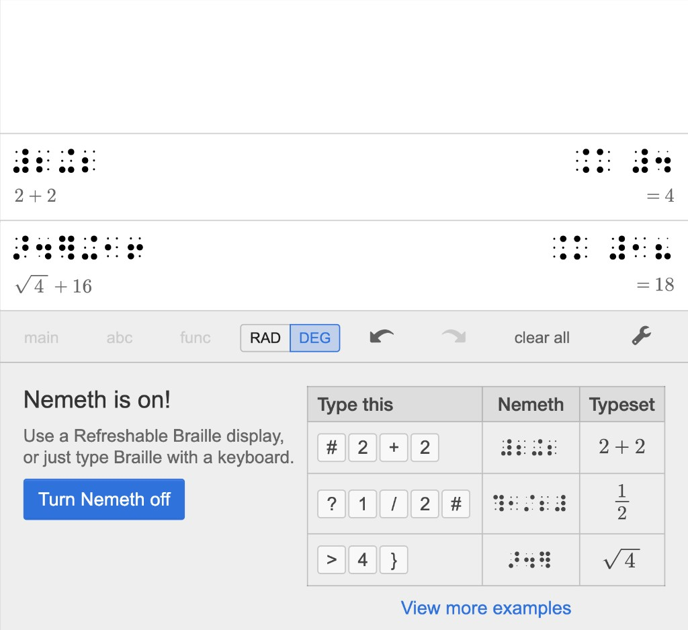
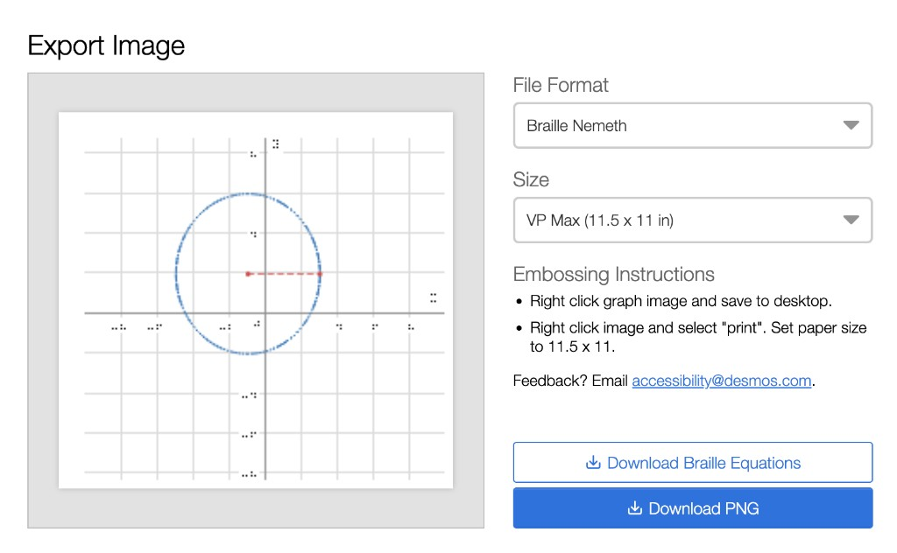

Braille Mode
We were invited to share our work on the graphing calculator with students in the TVI program at San Francisco State University. These future teachers were incredible, learning how to best support students across grades and subjects. How might they best support students using a refreshable Braille display alongside their computer? How would the TVI know where a student made a mistake and invite them to try again? How would the TVI do this if they rarely used Nemeth, a Braille code specific to math? With this in mind, we added typeset math alongside the Braille so someone working with a person using a refreshable Braille display could see the math on the screen.
Bonus: I designed a Braille font for this project that we titled "Abraham" after Abraham Nemeth, the creator of Nemeth Braille.

Audio Trace
This was an incredibly fun design challenge. How can you help a student understand a graph without being able to see it? We ultimately developed a mode called "audio trace" that allows a user to hear an audio representation of a graph, including different audio cues for intercepts and negative or positive values.
Tactile Graphics
Embossed graphics are another way for blind or low-vision students to interact with a graph. We created a way to format and export a graph so TVIs or their students could seamlessly create tactile graphics on the most common embossers.
